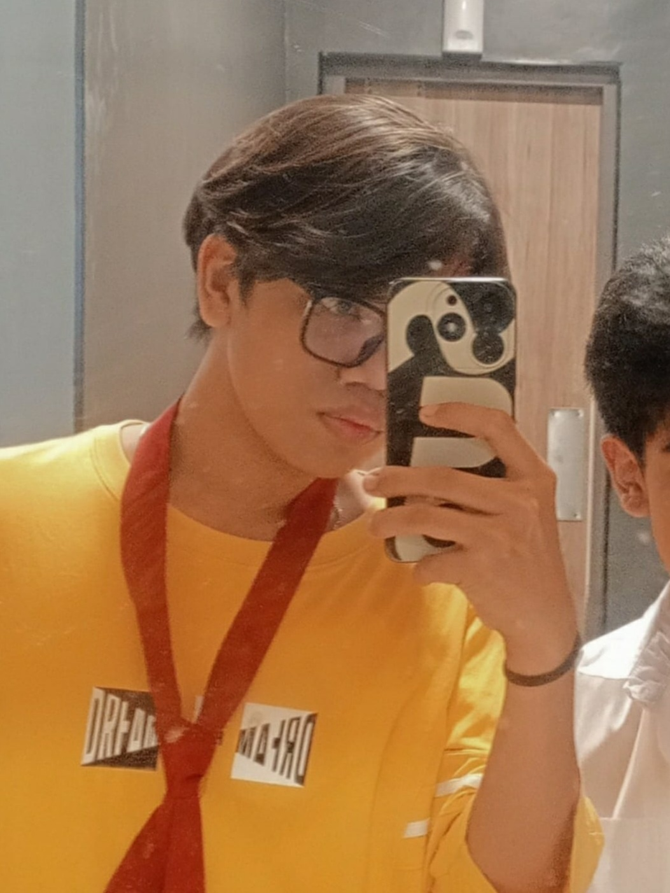

About Me
Hello, My name is Gabriel Francis Reyes, I'm currently a student at CMDI San Pablo City Campus, and I am in Grade 11 focusing on ICT. My favorite subject is Oracle, and I currently living in San Pablo City, Laguna. My hobby is coding, and I enjoy exploring and trying out various sports. Additionally, I love playing multiple musical instruments
I have some experience with computer maintenance and can perform some computer troubleshooting. I am capable to code in languages like C++, Java, and some HTML and CSS.